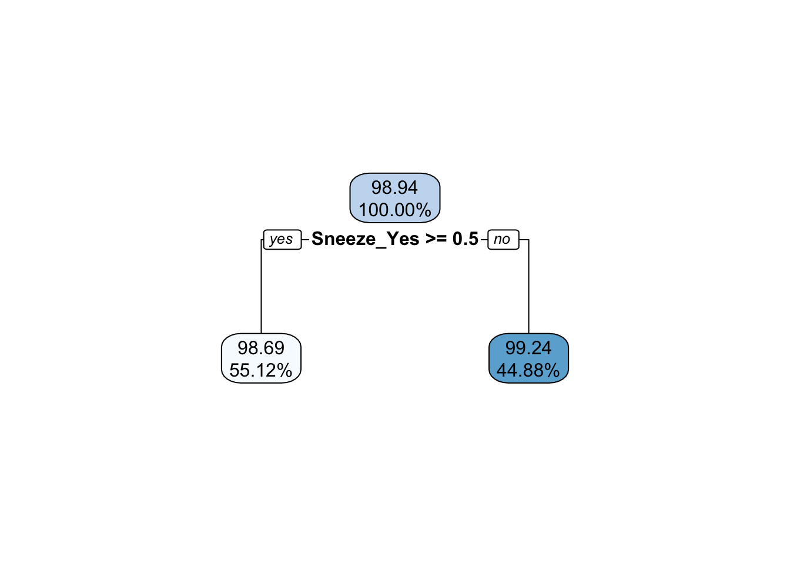
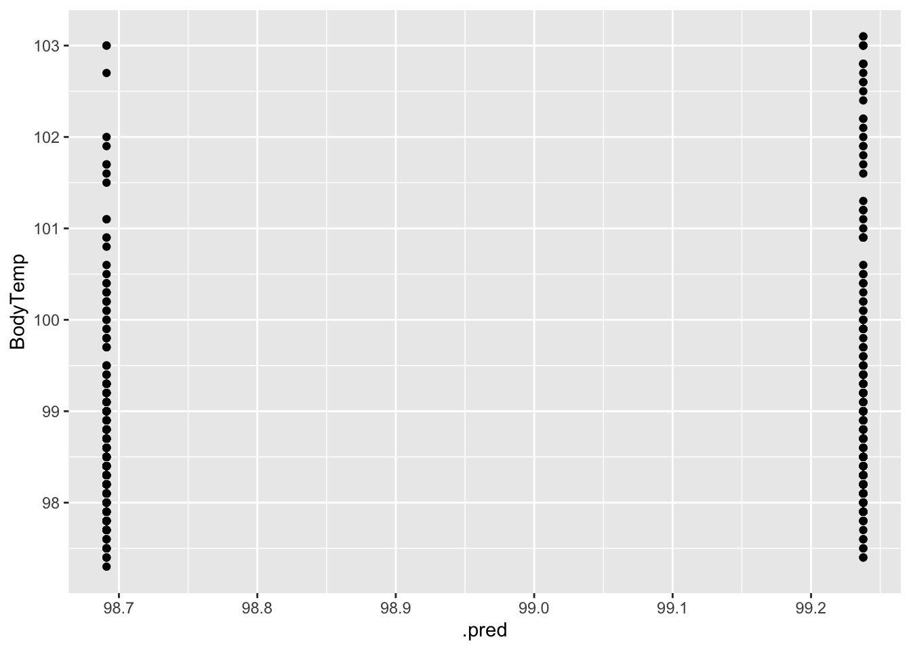
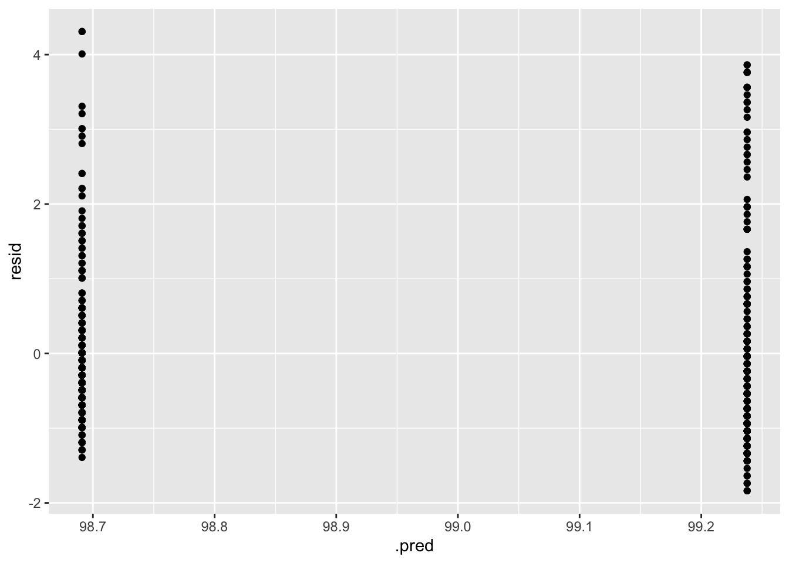
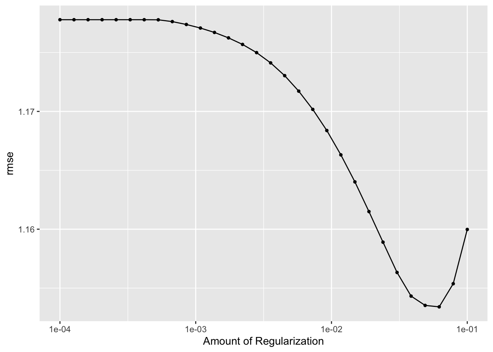
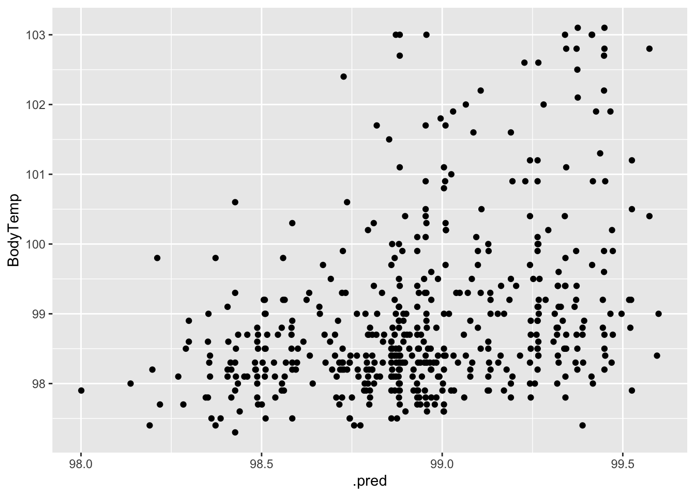
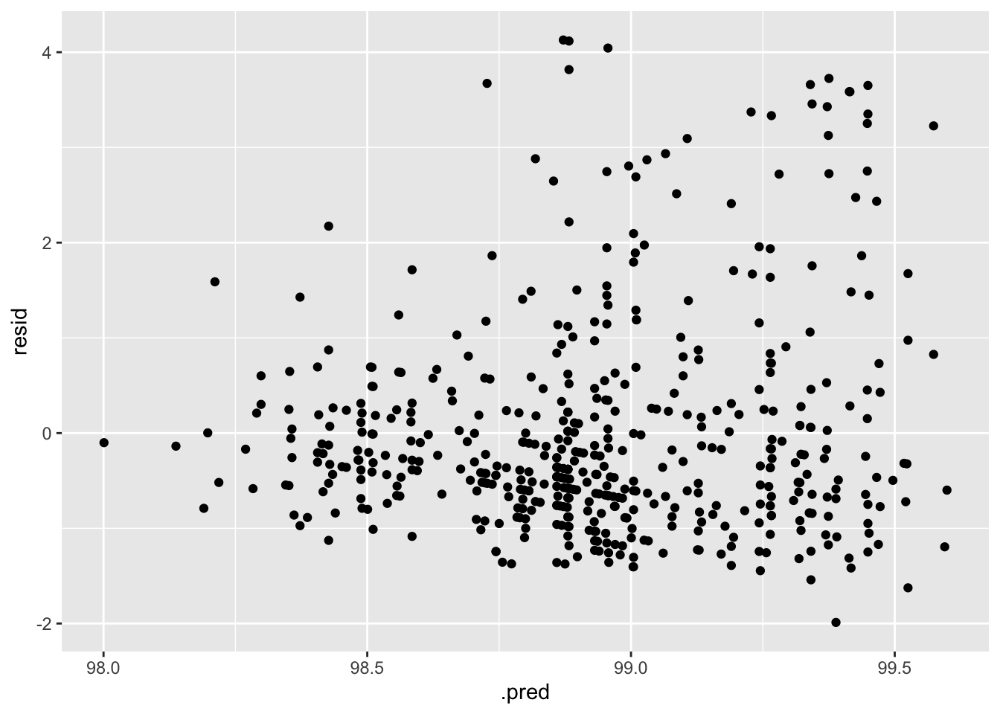

Analysis and Model Fitting Exercise
This is part of an analysis exercise in the Modern Applied Data Analysis course. The repository for the entire exercise can be found here.
Setup
I need to first load the packages we’ll be using and load in the data.
#load needed packages
library(tidyverse) #for data processing ## ── Attaching packages ─────────────────────────────────────── tidyverse 1.3.1 ──## ✓ ggplot2 3.3.5 ✓ purrr 0.3.4
## ✓ tibble 3.1.5 ✓ dplyr 1.0.7
## ✓ tidyr 1.1.4 ✓ stringr 1.4.0
## ✓ readr 2.0.2 ✓ forcats 0.5.1## ── Conflicts ────────────────────────────────────────── tidyverse_conflicts() ──
## x dplyr::filter() masks stats::filter()
## x dplyr::lag() masks stats::lag()library(tidymodels) #for model fitting ## Registered S3 method overwritten by 'tune':
## method from
## required_pkgs.model_spec parsnip## ── Attaching packages ────────────────────────────────────── tidymodels 0.1.4 ──## ✓ broom 0.7.9 ✓ rsample 0.1.0
## ✓ dials 0.0.10 ✓ tune 0.1.6
## ✓ infer 1.0.0 ✓ workflows 0.2.4
## ✓ modeldata 0.1.1 ✓ workflowsets 0.1.0
## ✓ parsnip 0.1.7 ✓ yardstick 0.0.8
## ✓ recipes 0.1.17## ── Conflicts ───────────────────────────────────────── tidymodels_conflicts() ──
## x scales::discard() masks purrr::discard()
## x dplyr::filter() masks stats::filter()
## x recipes::fixed() masks stringr::fixed()
## x dplyr::lag() masks stats::lag()
## x yardstick::spec() masks readr::spec()
## x recipes::step() masks stats::step()
## • Use tidymodels_prefer() to resolve common conflicts.library(rsample) #for data splitting
library(gtsummary) #for summary tables##
## Attaching package: 'gtsummary'## The following object is masked from 'package:recipes':
##
## all_numericlibrary(ranger) #for model fitting
library(rpart) #for model fitting ##
## Attaching package: 'rpart'## The following object is masked from 'package:dials':
##
## prunelibrary(glmnet) #for model fitting ## Loading required package: Matrix##
## Attaching package: 'Matrix'## The following objects are masked from 'package:tidyr':
##
## expand, pack, unpack## Loaded glmnet 4.1-3knitr::opts_chunk$set(echo = TRUE, message = FALSE, warning = FALSE)
#load data
mydata <- readRDS(here::here('files', 'processeddata.rds'))Feature/Variable Removal
I need to remove all Yes/No versions of variables that also exist as multiple level variables. Then, I need to code the three ordinal factors as ordered, in the proper order.
#remove yes/no version of multi-level variables - CoughYN, WeaknessYN, CoughYN2, MyalgiaYN
mydata.2 <- mydata %>%
select(!c(CoughYN, CoughYN2, WeaknessYN, MyalgiaYN))
#checking to see if ordinal factors are coded as ordered - Weakness, CoughIntensity, Myalgia
is.ordered(mydata.2$Weakness)## [1] FALSEis.ordered(mydata.2$CoughIntensity)## [1] FALSEis.ordered(mydata.2$Myalgia)## [1] FALSE#code ordinal/multi-level factors as ordered factors and check order is None/Mild/Moderate/Severe
mydata.3 <- mydata.2 %>%
mutate(Weakness = ordered(Weakness, levels = c('None', 'Mild', 'Moderate', 'Severe'))) %>%
mutate(CoughIntensity = ordered(CoughIntensity, levels = c('None', 'Mild', 'Moderate', 'Severe'))) %>%
mutate(Myalgia = ordered(Myalgia, levels = c('None', 'Mild', 'Moderate', 'Severe')))
#checking if new variables are coded as ordered
is.ordered(mydata.3$Weakness)## [1] TRUEis.ordered(mydata.3$CoughIntensity)## [1] TRUEis.ordered(mydata.3$Myalgia)## [1] TRUELow variance predictors
I now need to remove all binary predictors that have less than <50 entries in one of the categories. To do that, I first need to see what predictors fall into that category. Then I’ll remove them from the data set.
# create summary table to see what binary predictors have <50 in one category
mydata.3 %>%
select(!c(Weakness, CoughIntensity, Myalgia, BodyTemp)) %>% #removing all non-binary predictors
gtsummary::tbl_summary() #create summary table | Characteristic | N = 7301 |
|---|---|
| Swollen Lymph Nodes | 312 (43%) |
| Chest Congestion | 407 (56%) |
| Chills/Sweats | 600 (82%) |
| Nasal Congestion | 563 (77%) |
| Sneeze | 391 (54%) |
| Fatigue | 666 (91%) |
| Subjective Fever | 500 (68%) |
| Headache | 615 (84%) |
| Runny Nose | 519 (71%) |
| Abdominal Pain | 91 (12%) |
| Chest Pain | 233 (32%) |
| Diarrhea | 99 (14%) |
| Eye Pain | 113 (15%) |
| Sleeplessness | 415 (57%) |
| Itchy Eyes | 179 (25%) |
| Nausea | 255 (35%) |
| Ear Pain | 162 (22%) |
| Loss of Hearing | 30 (4.1%) |
| Sore Throat | 611 (84%) |
| Breathlessness | 294 (40%) |
| Tooth Pain | 165 (23%) |
| Blurred Vision | 19 (2.6%) |
| Vomiting | 78 (11%) |
| Wheezing | 220 (30%) |
|
1
n (%)
|
|
# binary predictors with <50 in one category: Loss of Hearing, Blurred Vision
# need to remove those two variables
mydata.4 <- mydata.3 %>%
select(!c(Hearing, Vision))
# Should have 730 observations and 26 variables - checking
dim(mydata.4) #this looks right! ## [1] 730 26# setting to final object name
mydata.fin <- mydata.4Data setup
In this step, I will set the seed to fix random numbers, split the data into train and test data, create and 5x5 cross-validation resample object, and create the recipe for the body temperature outcome as well as the linear regression model specification.
# set seed to fix random numbers
set.seed(123)
# put 70% of data into training set
data_split <- initial_split(mydata.fin,
prop = 7/10, #split data set into 70% training, 30% testing
strata = BodyTemp) #use bodytemp as stratification
# create data frames for training and testing sets
train_data <- training(data_split)
test_data <- testing(data_split)
# create a resample object for the training data; 5x5, stratify on bodytemp
cv5 <- vfold_cv(train_data,
v = 5,
repeats = 5,
strata = BodyTemp)
# create a recipe for the data and fitting; code categorical variables as dummy variables
temp_rec <- recipes::recipe(BodyTemp ~ .,
data = train_data) %>%
step_dummy(all_predictors())
# linear model specification
linear_reg_lm_spec <-
linear_reg() %>%
set_engine('lm')Null model performance
The first model to fit is the null model. This will be fit to both the train and the test data.
#compute the performance of a null model with no predictor information - train data
null_mod_train <- lm(BodyTemp ~ 1, data = train_data)
summary(null_mod_train)##
## Call:
## lm(formula = BodyTemp ~ 1, data = train_data)
##
## Residuals:
## Min 1Q Median 3Q Max
## -1.6364 -0.7364 -0.4364 0.3636 4.1636
##
## Coefficients:
## Estimate Std. Error t value Pr(>|t|)
## (Intercept) 98.93642 0.05371 1842 <2e-16 ***
## ---
## Signif. codes: 0 '***' 0.001 '**' 0.01 '*' 0.05 '.' 0.1 ' ' 1
##
## Residual standard error: 1.211 on 507 degrees of freedommean(train_data$BodyTemp) #checking the mean of body temp is the same as the bodytemp coefficient in the null model## [1] 98.93642#calculate RMSE
null_mod_train %>%
augment(newdata = train_data) %>%
rmse(truth = BodyTemp, estimate = .fitted)## # A tibble: 1 × 3
## .metric .estimator .estimate
## <chr> <chr> <dbl>
## 1 rmse standard 1.21#compute the performance of a null model with no predictor information - test data
null_mod_test <- lm(BodyTemp ~ 1, data = test_data)
summary(null_mod_test)##
## Call:
## lm(formula = BodyTemp ~ 1, data = test_data)
##
## Residuals:
## Min 1Q Median 3Q Max
## -1.732 -0.732 -0.432 0.368 4.068
##
## Coefficients:
## Estimate Std. Error t value Pr(>|t|)
## (Intercept) 98.93198 0.07825 1264 <2e-16 ***
## ---
## Signif. codes: 0 '***' 0.001 '**' 0.01 '*' 0.05 '.' 0.1 ' ' 1
##
## Residual standard error: 1.166 on 221 degrees of freedommean(test_data$BodyTemp) #checking the mean of body temp is the same as the bodytemp coefficient in the null model## [1] 98.93198#calculate RMSE
null_rmse <- null_mod_test %>%
augment(newdata = test_data) %>%
rmse(truth = BodyTemp, estimate = .fitted) %>%
mutate(model = 'Null Model')Model tuning and fitting
The model fitting process will be:
- Define the model specification
- Create a workflow
- Create a tuning grid and tune the hyperparameters
- Autoplot the results
- Finalize the workflow
- Fit the model to the training data
- Estimate model performance with RMSE
- Make diagnostic plots
Do these steps for each model (tree, LASSO, random forest)
Finally, look at RMSEs for all models (including null) together - choose best performing model, fit to test data, then repeat 7 and 8.
Tree
As a reminder, the tree model will be fit by following these steps:
- Define the model specification
- Create a workflow
- Create a tuning grid and tune the hyperparameters
- Autoplot the results
- Finalize the workflow
- Fit the model to the training data
- Estimate model performance with RMSE
- Make diagnostic plots
Let’s get started!
# 1) define model spec
tree_tune_spec <- decision_tree(
cost_complexity = tune(),
tree_depth = tune()) %>%
set_engine('rpart') %>%
set_mode('regression')
tree_tune_spec## Decision Tree Model Specification (regression)
##
## Main Arguments:
## cost_complexity = tune()
## tree_depth = tune()
##
## Computational engine: rpart# 2) workflow
tree_wflow <- workflow() %>%
add_model(tree_tune_spec) %>%
add_recipe(temp_rec)
# 3) create tuning grid
tree_grid <- grid_regular(cost_complexity(),
tree_depth(),
levels = 5)
# tune hyperparameters
tree_res <- tree_wflow %>%
tune_grid(resamples = cv5,
grid = tree_grid,
metrics = metric_set(rmse),
control = control_grid(verbose = T))
# 4) autoplot the results
tree_res %>% autoplot()
# 5) finalize the workflow
## select best hyperparameter combination
happy_tree <- tree_res %>%
select_best()
happy_tree## # A tibble: 1 × 3
## cost_complexity tree_depth .config
## <dbl> <int> <chr>
## 1 0.0000000001 1 Preprocessor1_Model01## finalize workflow
happy_tree_wflow <- tree_wflow %>%
finalize_workflow(happy_tree)
fit_train_happy_tree <- happy_tree_wflow %>%
fit(data = train_data)
# 6) fit the model to training data
# Use a trained workflow to predict section using test data
predict(fit_train_happy_tree, new_data = train_data)## # A tibble: 508 × 1
## .pred
## <dbl>
## 1 99.2
## 2 99.2
## 3 98.7
## 4 98.7
## 5 98.7
## 6 98.7
## 7 98.7
## 8 99.2
## 9 99.2
## 10 99.2
## # … with 498 more rows# include predicted probabilities
aug_train_happy_tree <- augment(fit_train_happy_tree, new_data = train_data)
# 7) estimate model performance with rmse
tree_rmse <- aug_train_happy_tree %>%
rmse(truth = BodyTemp, .pred) %>%
mutate(model = 'Regression Tree')
tree_rmse## # A tibble: 1 × 4
## .metric .estimator .estimate model
## <chr> <chr> <dbl> <chr>
## 1 rmse standard 1.18 Regression Tree# 8) Make diagnostic plots
## view decision tree
extract_fit_engine(fit_train_happy_tree) |> rpart.plot::rpart.plot(digits = 4)
#plot actual vs fitted
ggplot(data = aug_train_happy_tree, aes(x = .pred, y = BodyTemp)) +
geom_point()
#plot residuals vs fitted
aug_train_happy_tree %>%
mutate(resid = BodyTemp - .pred) %>%
ggplot(aes(x = .pred, y = resid)) +
geom_point()
When looking at the autoplot of the results, it appears that a tree depth of one produces the lowest RMSE. We can see that this is the model that is chosen by looking at the extracted fit decision tree, which only goes down one level.
LASSO
The same basic steps for the tree model will be used for the LASSO model as well:
- Define the model specification
- Create a workflow
- Create a tuning grid and tune the hyperparameters
- Autoplot the results
- Finalize the workflow
- Fit the model to the training data
- Estimate model performance with RMSE
- Make diagnostic plots
# 1) define model spec
lasso_tune_spec <- linear_reg(
penalty = tune(), mixture = 1) %>%
set_engine('glmnet')
lasso_tune_spec## Linear Regression Model Specification (regression)
##
## Main Arguments:
## penalty = tune()
## mixture = 1
##
## Computational engine: glmnet# 2) workflow
lasso_wflow <- workflow() %>%
add_model(lasso_tune_spec) %>%
add_recipe(temp_rec)
# 3) create tuning grid
lasso_grid <- tibble(penalty = 10^seq(-4, -1, length.out = 30))
lasso_grid %>% top_n(-5)## # A tibble: 5 × 1
## penalty
## <dbl>
## 1 0.0001
## 2 0.000127
## 3 0.000161
## 4 0.000204
## 5 0.000259lasso_grid %>% top_n(5)## # A tibble: 5 × 1
## penalty
## <dbl>
## 1 0.0386
## 2 0.0489
## 3 0.0621
## 4 0.0788
## 5 0.1# tune hyperparameters
lasso_res <- lasso_wflow %>%
tune_grid(resample = cv5,
grid = lasso_grid,
control = control_grid(save_pred = T, verbose = T),
metrics = metric_set(rmse))
# 4) autoplot the results
lasso_res %>% autoplot()
#5) finalize the workflow
# select best hyperparameter combination
best_lasso <- lasso_res %>%
select_best()
best_lasso## # A tibble: 1 × 2
## penalty .config
## <dbl> <chr>
## 1 0.0621 Preprocessor1_Model28# finalize workflow
best_lasso_wflow <- lasso_wflow %>%
finalize_workflow(best_lasso)
fit_best_lasso <- best_lasso_wflow %>%
fit(data = train_data)
#6) fit the model to the test data
# Use a trained workflow to predict section using train data
predict(fit_best_lasso, new_data = train_data)## # A tibble: 508 × 1
## .pred
## <dbl>
## 1 98.8
## 2 98.8
## 3 98.5
## 4 98.8
## 5 98.7
## 6 98.7
## 7 98.4
## 8 99.3
## 9 98.9
## 10 99.0
## # … with 498 more rows# include predicted probabilities
aug_best_lasso <- augment(fit_best_lasso, new_data = train_data)
# estimate model performance with rmse
lasso_rmse <- aug_best_lasso %>%
rmse(truth = BodyTemp, .pred) %>%
mutate(model = 'LASSO')
lasso_rmse## # A tibble: 1 × 4
## .metric .estimator .estimate model
## <chr> <chr> <dbl> <chr>
## 1 rmse standard 1.13 LASSO# 8) Make diagnostic plots
## view coefficient values vs penalty terms
extract_fit_engine(fit_best_lasso) |> plot('lambda')
#plot actual vs fitted
ggplot(data = aug_best_lasso, aes(x = .pred, y = BodyTemp)) +
geom_point()
#plot residuals vs fitted
aug_best_lasso %>%
mutate(resid = BodyTemp - .pred) %>%
ggplot(aes(x = .pred, y = resid)) +
geom_point()
My biggest concern with this model is that the variance seems to increase with increasing temperature. Prediction accuracy also increases as temperature increases.
Random Forest
We’ll follow these same steps one last time!
- Define the model specification
- Create a workflow
- Create a tuning grid and tune the hyperparameters
- Autoplot the results
- Finalize the workflow
- Fit the model to the training data
- Estimate model performance with RMSE
- Make diagnostic plots
#cores <- parallel::detectCores()
#cores
# 1) define model spec
forest_spec <-
rand_forest(
mtry = tune(),
min_n = tune(),
trees = 1000
) %>%
set_engine('ranger',
num.threads = 1) %>%
set_mode('regression')
forest_spec## Random Forest Model Specification (regression)
##
## Main Arguments:
## mtry = tune()
## trees = 1000
## min_n = tune()
##
## Engine-Specific Arguments:
## num.threads = 1
##
## Computational engine: ranger# 2) workflow
forest_wflow <- workflow() %>%
add_model(forest_spec) %>%
add_recipe(temp_rec)
# 3/4) create tuning grid/tune hyperparameters
forest_spec %>% parameters()## Collection of 2 parameters for tuning
##
## identifier type object
## mtry mtry nparam[?]
## min_n min_n nparam[+]
##
## Model parameters needing finalization:
## # Randomly Selected Predictors ('mtry')
##
## See `?dials::finalize` or `?dials::update.parameters` for more information.forest_res <- forest_wflow %>%
tune_grid(resample = cv5,
grid = 25,
metrics = metric_set(rmse),
control = control_grid(save_pred = T, verbose = T))
forest_res %>% show_best(metric = "rmse")## # A tibble: 5 × 8
## mtry min_n .metric .estimator mean n std_err .config
## <int> <int> <chr> <chr> <dbl> <int> <dbl> <chr>
## 1 6 35 rmse standard 1.16 25 0.0166 Preprocessor1_Model20
## 2 8 38 rmse standard 1.17 25 0.0167 Preprocessor1_Model16
## 3 2 16 rmse standard 1.17 25 0.0167 Preprocessor1_Model01
## 4 3 10 rmse standard 1.17 25 0.0163 Preprocessor1_Model14
## 5 10 28 rmse standard 1.17 25 0.0167 Preprocessor1_Model23# 5) autoplot the results
forest_res %>% autoplot()
# select best hyperparameter combination
best_forest <- forest_res %>%
select_best()
best_forest## # A tibble: 1 × 3
## mtry min_n .config
## <int> <int> <chr>
## 1 6 35 Preprocessor1_Model20# finalize workflow
best_forest_wflow <- forest_wflow %>%
finalize_workflow(best_forest)
fit_best_forest <- best_forest_wflow %>%
fit(data = train_data)
# Use a trained workflow to predict section using train data
predict(fit_best_forest, new_data = train_data)## # A tibble: 508 × 1
## .pred
## <dbl>
## 1 98.7
## 2 98.6
## 3 98.7
## 4 98.7
## 5 98.8
## 6 98.6
## 7 98.3
## 8 99.1
## 9 98.8
## 10 98.9
## # … with 498 more rows# include predicted probabilities
aug_best_forest <- augment(fit_best_forest, new_data = train_data)
# estimate model performance with rmse
forest_rmse <- aug_best_forest %>%
rmse(truth = BodyTemp, .pred) %>%
mutate(model = 'Random Forest')
forest_rmse## # A tibble: 1 × 4
## .metric .estimator .estimate model
## <chr> <chr> <dbl> <chr>
## 1 rmse standard 1.03 Random Forest# 8) Make diagnostic plots
#plot actual vs fitted
ggplot(data = aug_best_forest, aes(x = .pred, y = BodyTemp)) +
geom_point()
#plot residuals vs fitted
aug_best_forest %>%
mutate(resid = BodyTemp - .pred) %>%
ggplot(aes(x = .pred, y = resid)) +
geom_point()
These diagnostic plots looks a little better than those of the LASSO model. The RMSE is lower as well. These things indicate this is a better model for this analysis.
Model Selection
In order to choose the best performing model, I will look at all of the RMSEs together. The model with the lowest RMSE will be the one I fit to the test data.
#view RMSEs of all four models
knitr::kable(rbind(null_rmse, tree_rmse, lasso_rmse, forest_rmse))| .metric | .estimator | .estimate | model |
|---|---|---|---|
| rmse | standard | 1.163334 | Null Model |
| rmse | standard | 1.178367 | Regression Tree |
| rmse | standard | 1.131147 | LASSO |
| rmse | standard | 1.026835 | Random Forest |
The random forest model performed far better than the other three, as evidenced by the lowest RMSE, so I will fit the test data to this model.
Final Model Fit to Test Data
forest_final <- best_forest_wflow %>%
last_fit(data_split)
# Use a trained workflow to predict section using test data
forest_final %>%
collect_predictions() ## # A tibble: 222 × 5
## id .pred .row BodyTemp .config
## <chr> <dbl> <int> <dbl> <chr>
## 1 train/test split 99.1 2 100. Preprocessor1_Model1
## 2 train/test split 99.0 4 98.8 Preprocessor1_Model1
## 3 train/test split 99.7 11 98.2 Preprocessor1_Model1
## 4 train/test split 99.4 12 97.9 Preprocessor1_Model1
## 5 train/test split 98.7 14 102. Preprocessor1_Model1
## 6 train/test split 99.4 17 99.3 Preprocessor1_Model1
## 7 train/test split 99.4 25 97.8 Preprocessor1_Model1
## 8 train/test split 99.4 27 99.5 Preprocessor1_Model1
## 9 train/test split 99.2 29 99.7 Preprocessor1_Model1
## 10 train/test split 99.2 32 98.8 Preprocessor1_Model1
## # … with 212 more rows# include predicted probabilities
aug_final_forest <- augment(forest_final)
# estimate model performance with rmse
aug_final_forest %>%
rmse(truth = BodyTemp, .pred) ## # A tibble: 1 × 3
## .metric .estimator .estimate
## <chr> <chr> <dbl>
## 1 rmse standard 1.18# 8) Make diagnostic plots
#plot actual vs fitted
ggplot(data = aug_final_forest, aes(x = .pred, y = BodyTemp)) +
geom_point()
#plot residuals vs fitted
aug_final_forest %>%
mutate(resid = BodyTemp - .pred) %>%
ggplot(aes(x = .pred, y = resid)) +
geom_point()
When fit to the test data, the model did not perform quite as well as it did when fit to the train data, but this is not too surprising. The diagnostic plots also indicate increased variance.